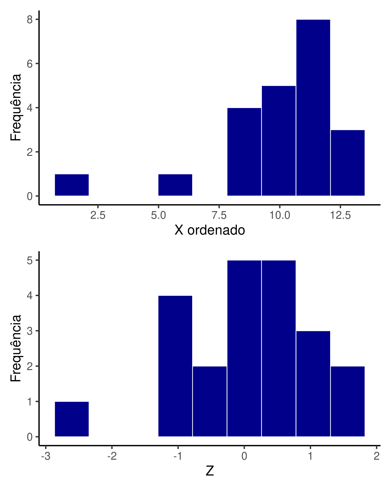
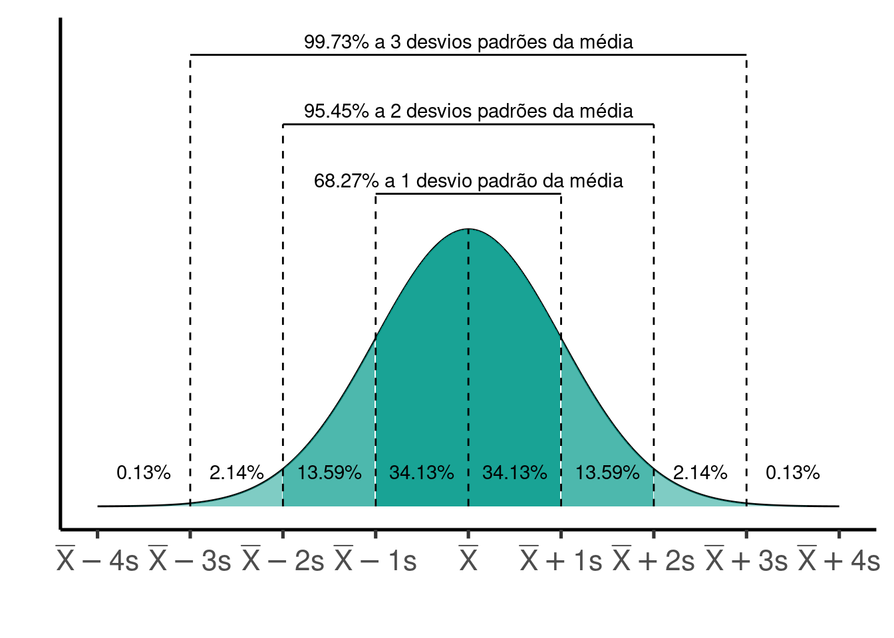

library(tidyverse)
library(flextable)
library(patchwork)
#source('scripts/tc_assimetria_ggplot.r')
source('scripts/normal_empirica_gg.r')8 Medidas de posição: índice Z
Pacotes e funções utilizadas no capítulo
O Índice (ou escore) \(Z\) indica a posição de uma observação particular (\(X_i\)) dentro de uma distribuição, relacionando a posição de \(X_i\) com a média e o desvio padrão da distribuição de \(X\). Suponha uma variável com média \(\overline{X}\) e desvio padrão \(s\). O índice de \(Z_i\) para uma observação \(i\) particular é calculado por:
\[Z_i = \frac{X_i - \overline{X}}{s}\]
Seja por exemplo a variável \(X\)
Code
set.seed(1)
X = round(rnorm(20, 10, 2),1)
nX = length(X)
sX = sort(X)\(X\) = 8.7, 10.4, 8.3, 13.2, 10.7, 8.4, 11, 11.5, 11.2, 9.4, 13, 10.8, 8.8, 5.6, 12.2, 9.9, 10, 11.9, 11.6, 11.2
Com média e desvio padrão \(\overline{X} = 10.39\) e \(s = 1.82\), respectivamente.
O índice \(Z_i\) para a \(3a\) observação \(X_{3} = 8.3\) por ser obtido por:
Code
i = 3
Xm = mean(X)
Xsd = sd(X)
Zi = (X[i] - Xm)/Xsd\(Z_8.3 = \frac{8.3 - 10.39}{1.82} = -1.15\)
8.1 Interpretando o valor de \(Z\)
O cálculo do índice \(Z\) passa pela centralização e padronização da variável \(X\):
- Centralização: a porção \(X_i - \overline{X}\) mede o desvio de cada observação, isto é, a distância (positiva ou negativa) entre \(X_i\) e \(\overline{X}\). O termo centralização se refere ao comportamento dos desvios estarem distribuídos ao redor de zero, isto é, a média dos desvios é zero.
\(\sum_{i=1}^{n}\frac{(X_i - \overline{X})}{n} = 0\)
- Padronização: ao dividirmos a quantia \(X_i - \overline{X}\) pelo desvio padrão de \(X\) obtemos a nova variável denominada \(Z\). O termo padronização refere-se ao fato de que o desvio padrão de \(Z\) ser igual a \(1\).
A transformação \(Z\) consiste portanto de gerar uma nova variável com média \(\overline{Z} = 0\) e desvio padrão \(s_{Z} = 1\).
Deste modo, o valor de \(Z_i\) associado a uma observação \(X_i\) particular nos indica quantos desvios padrões \(X_i\) está acima ou abaixo da média de seu grupo.
Relação \(Z\) e \(X\)
- Se \(Z_i = 0\), então \(X_i = \overline{X}\);
- Se \(Z_i > 0\), então \(X_i > \overline{X}\);
- Se \(Z_i < 0\), então \(X_i < \overline{X}\);
Para uma distribuição com média igual \(10\) e desvio padrão igual a \(3\) por exemplo, uma observação \(X_i = 16\) terá um valor de \(Z = \frac{16-10}{3} = 2\), indicando que está dois desvios padrões acima da média de \(X\).
8.2 Cálculo de \(Z\) no ambiente R
Seja
Code
set.seed(1)
X = round(rnorm(20, 10, 2),1)\(X\) = 8.7, 10.4, 8.3, 13.2, 10.7, 8.4, 11, 11.5, 11.2, 9.4, 13, 10.8, 8.8, 5.6, 12.2, 9.9, 10, 11.9, 11.6, 11.2
\(Z\) pode ser obtido pelos comandos:
Xm = mean(X)
Xsd = sd(X)
Z = (sort(X) - Xm)/XsdPodemos ver na Tabela 8.1 os valores de cada observação \(X_i\) e dos respectivos valore de \(Z_i\) em ordem crescente.
Code
Posicao_k = paste(1:length(X), "a Posição", sep = "")
df = tibble(`Posicao k` = Posicao_k, `X ordenado` = sX, Z = round(Z,2)) %>%
add_row(., `Posicao k` = c('Média', 'Desvio padrão'),
`X ordenado` = c(round(mean(sX),2), round(sd(sX),2)),
Z = c(round(mean(Z),2), round(sd(Z),2)))
df %>%
flextable() %>%
bg(i = ~ `Posicao k` == 'Média' | `Posicao k` == 'Desvio padrão', bg = 'lightblue') %>%
width(width = 1.5)Posicao k | X ordenado | Z |
1a Posição | 5.60 | -2.63 |
2a Posição | 8.30 | -1.15 |
3a Posição | 8.40 | -1.09 |
4a Posição | 8.70 | -0.93 |
5a Posição | 8.80 | -0.87 |
6a Posição | 9.40 | -0.54 |
7a Posição | 9.90 | -0.27 |
8a Posição | 10.00 | -0.21 |
9a Posição | 10.40 | 0.01 |
10a Posição | 10.70 | 0.17 |
11a Posição | 10.80 | 0.23 |
12a Posição | 11.00 | 0.34 |
13a Posição | 11.20 | 0.45 |
14a Posição | 11.20 | 0.45 |
15a Posição | 11.50 | 0.61 |
16a Posição | 11.60 | 0.66 |
17a Posição | 11.90 | 0.83 |
18a Posição | 12.20 | 0.99 |
19a Posição | 13.00 | 1.43 |
20a Posição | 13.20 | 1.54 |
Média | 10.39 | 0.00 |
Desvio padrão | 1.82 | 1.00 |
Podemos comparar graficamente as distribuição das variável \(X\) e \(Z\).
Code
hX = ggplot(df, aes(x = `X ordenado`)) +
geom_histogram(fill = 'darkblue', color = 'white', bins = 9) +
ylab('Frequência') +
scale_x_continuous(n.breaks = 7) +
theme_classic(base_size = 20)
hZ = ggplot(df, aes(x = Z)) +
geom_histogram(fill = 'darkblue', color = 'white', bins = 9) +
ylab('Frequência') +
scale_x_continuous(n.breaks = 7) +
theme_classic(base_size = 20)
hX / hZ
Veja na Tabela 8.1 que conforme o valor de \(X_i\) se distancia da média de \(X = 10.39\), mais distante de zero será o valor de \(Z_i\). Neste exemplo, as observações mais extremas de \(X\) estão, respectivamente, a -2.63 desvios padrões abaixo e 1.54 desvios padrões acima da média. Como discutimos acima, a nova variável \(Z\) tem média \(\overline{Z} = 0\) (está centralizada) e desvio padrão \(s_Z = 1\) (está padronizada).
8.3 Obtendo a transformação \(Z\) a partir de uma tabela de dados
Importe a base de dados Reservatorios_Parana_parcial.csv.
res = read_delim('Reservatorios_Parana_parcial.csv',
delim = ',',
locale = locale(decimal_mark = '.',
encoding = 'latin1'))Utilizando a função mutate, vamos manter somente a variável CPUE e criar outra coluna denominada CPUE_z.
df_z = res %>%
select(CPUE) %>%
mutate(CPUE_z = (CPUE - mean(CPUE))/sd(CPUE)) %>%
round(2)
df_z %>%
flextable()CPUE | CPUE_z |
9.22 | -0.47 |
28.73 | 2.17 |
11.59 | -0.15 |
30.76 | 2.45 |
5.95 | -0.92 |
7.75 | -0.67 |
7.51 | -0.70 |
4.01 | -1.18 |
20.83 | 1.10 |
2.43 | -1.39 |
12.55 | -0.02 |
11.73 | -0.13 |
13.72 | 0.14 |
16.50 | 0.52 |
4.71 | -1.08 |
7.95 | -0.64 |
13.12 | 0.06 |
16.10 | 0.46 |
11.74 | -0.13 |
17.95 | 0.71 |
13.86 | 0.16 |
13.04 | 0.05 |
7.35 | -0.73 |
20.92 | 1.12 |
13.67 | 0.13 |
21.82 | 1.24 |
6.29 | -0.87 |
9.40 | -0.45 |
5.60 | -0.96 |
2.05 | -1.45 |
24.88 | 1.65 |
Se calcularmos a média e desvio padrão das variáveis veremos que CPUE mantém os valores originais, enquanto CPUE_z terá média igual a \(0\) e desvio padrão igual a \(1\).
df_z %>%
summarize(CPUE_media = mean(CPUE),
CPUE_dp = sd(CPUE),
CPUE_z_media = round(mean(CPUE_z),2),
CPUE_z_dp = round(sd(CPUE_z),2)) %>%
flextable()CPUE_media | CPUE_dp | CPUE_z_media | CPUE_z_dp |
12.70097 | 7.3701 | 0 | 1 |
8.4 Valores esperados de \(Z\) em uma distribuição normal padronizada
A interpretação de \(Z\) faz sentido quando desejamos posicionar uma determinada observação \(X_i\) como função da média e desvio padrão de seu grupo. Adicionalmente, se uma variável \(X\) puder ser descrita adequadamente por uma distribuição normal de probabilidades, existe uma regra empírica nos permite determinar os percentuais das observações acima e abaixo de limites conhecidos.
Code
# Ver função completa no arquivo 'scripts/normal_empirica_gg.r'
normal_empirica_gg()
Na Figura 8.2 vemos que existe uma probabilidade de aproximadamente \(68\%\) de que uma observação tomada ao acaso esteja entre os limites de \(-1\) e \(1\) desvios padrões da média. Existe ainda uma probabilidade de aproximadamente \(95\%\) de que uma observação esteja entre \(-2\) e \(2\) desvios padrões da média. Por outro lado, que é muito improvável encortarmso ao acaso uma observação a mais de \(3\) desvios padrões distantes da média. Isto deverá ocorrer em somente de cerca de \(0,26\%\) dos casos em que sortearmos uma amostra aleatoriamente.
Uso da distribuição norma empírica
Suponha que a distribuição de altura de homens adultos siga uma distribuição normal com média \(\mu = 175\) cm e desvio padrão de \(\sigma = 175\) cm.
Code
mH = 175
sdH = 10
lim = 2
linf = round(mH - lim * sdH,2)
lsup = round(mH + lim * sdH,2)Neste caso, se tomarmos os limites entre \(-2\) e \(+2\) desvios padrões teremos:
\(\mu - 2 \times \sigma = 175 - 2 \times 10 = 155\) cm
e
\(\mu + 2 \times \sigma = 175 + 2 \times 10 = 195\) cm
Estes resultados sugerem que nesta população temos somente cerca de \(5\%\) dos homens adultos com mais de \(195\) cm ou menos de \(155\) cm de altura.